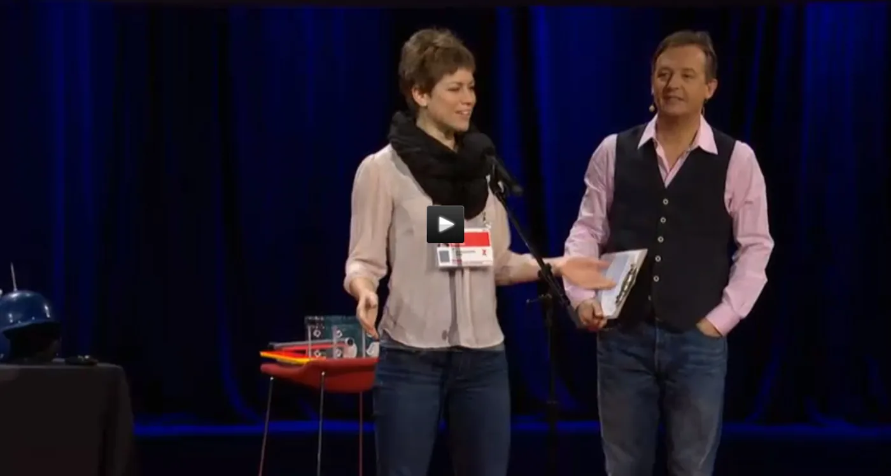

Blog · March 22, 2014
A 30 Second TEDTalk
Imagine a future when you could put on one of Hugh Herr’s robotic biomechatronic exoskeletons and instantly do acrobatics. Imagine shredding slopes like Shaun White. Pair this with a Chris Klewe style augmented reality football visor so you could see real time stats and visualizations of your new iron man esque skills. Thinking farther future, you might pop some Negroponte knowledge pills and Kurzwifi neuro nanobots so you can instantly calculate new tricks, download the latest apps and stream your adventures first person from glass and the drones filming you from above.
Surprise this morning. I was invited to share a 30 second neural avalanche onstage at TED 2014. Opening the final day. This references a few favorite wild and forward thinking presentations from this week which I look forward to rewatching. Because awesome.
Extraordinary life. Wonderful times. Viva TED.

First published on my old blog, amyrobinson.wordpress.com, March 22, 2014.